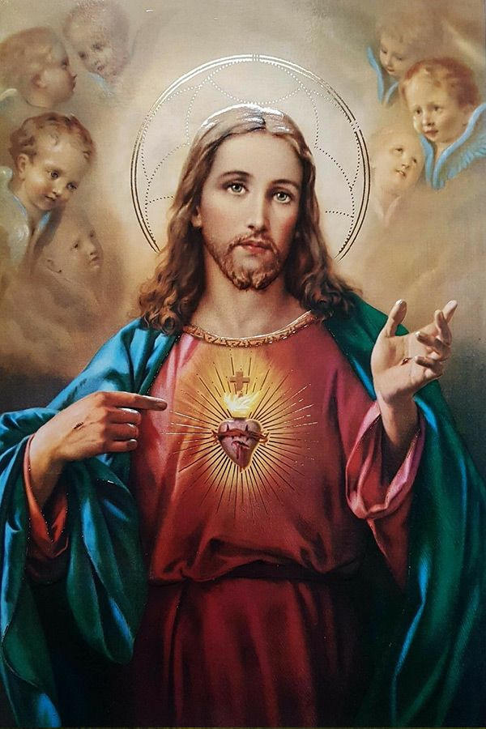

Source: PinterestFate is strange. Who would have thought a short Middle-Eastern Jewish carpenter would become the central figure of the world's largest religion, and thus hold the title of the most influential human of all time. Born to Joseph and Mary, a supposedly virgin mother, in Bethlehem and supposedly baptized by John the Baptist, Christ, whose name derives from the the Greek word christos meaning "annointed one", was believed to be the incarnation of God. His life and teachings are immortalized by the Bible's New Testament, the most popular book of all-time, with billions of copies created, sold and read around the world for millennia. His legacy, a religion currently followed by 2.5 billion people, has been branched off and adapted multiple times in dramatic fashion, such as the Great Schism and the Protestant Reformation, which have resulted in the birth of new communities and nations. The wars and bloodshed that resulted from Christianity have resulted in immense loss of human life and include the Chinese Taiping Rebellion. A civil war fought on the other side of the globe from Jesus' birthplace in the 19th century, it killed up to 40 million and is the bloodiest civil war ever. Due to his teachings, homosexuality and abortion continue to be hot-button political topics around the world over two millennia after his existence, and his birthplace remains embroiled deep in turmoil from rivaling religious and political groups. However, the unity and hope Christ bequeathed to his followers cannot be understated. We can try to imagine what our world would be like if Jesus was never born, but we can see with our own eyes the structural impact his very existence has afforded humanity, from the families and friendships formed by the communities that congregate in his honor to the architectual marvel of the Hagia Sophia.